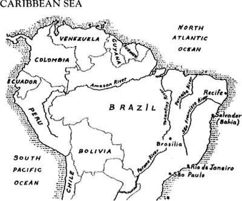

Listen to Part 1:
Bahia là một tiểu bang ở Brazil. Nhiều nhà thơ và nhà văn vĩ đại nhất của Brazil sinh ra ở Bahia. Du khách đến Bahia từ khắp nơi trên thế giới. Họ chơi trên những bãi biển đầy cát và bơi trong làn nước Đại Tây Dương.
Hơn một triệu người dân sinh sống tại Salvador, thủ phủ của Bahia. Một số người trong số họ rất giàu có và sống trong những ngôi nhà lớn. Họ có ô tô và người hầu. Những người khác không giàu có như vậy, nhưng họ có việc làm và sống trong những ngôi nhà nhỏ. Còn rất nhiều người khác thì rất nghèo. Họ sống trong những túp lều gỗ nhỏ bé.
Pedro Moreira sống trong một túp lều trên sườn đồi. Ngọn đồi đó được gọi là Gloria. Pedro sống với vợ mình, Maria. Túp lều của họ chỉ có một căn phòng nhỏ gần như trống rỗng. Chỉ có một chiếc bàn cũ, một chiếc ghế hỏng và một chiếc nệm. Maria mang nước từ một con suối cách đó hơn một km.

Một ngày nọ, Pedro đang ngồi trên mặt đất bên ngoài túp lều của mình. Anh trông rất buồn. Vợ anh sắp sinh con. Họ đã có ba người con trước đó, nhưng tất cả đều đã chết. Pedro muốn có một đứa con trai. Nhưng làm sao anh có thể kiếm được thức ăn cho một đứa trẻ sơ sinh?
Một người phụ nữ đi ngang qua và nói chuyện với anh.
‘Có tin tức gì chưa, Pedro?’ cô ấy hỏi.
‘Chưa, Teresa’, Pedro trả lời.
‘Lần này sẽ là một bé trai’, Teresa nói. ‘Tôi chắc chắn như vậy’.
‘Điều đó không quan trọng’, Pedro đáp. ‘Nó sẽ ăn gì đây? Tôi không có việc làm và không có tiền’.
Listen to Part 2:
‘Ngày mai mọi chuyện sẽ tốt hơn’, Teresa nói. ‘Đừng mất hy vọng’.
Pedro không trả lời. Anh im lặng ngồi đó hơn một giờ. Cuối cùng, có tiếng động bên trong túp lều. Một bà lão bước ra. Bà đang bế một đứa trẻ mới sinh. Đứa trẻ nhỏ, gầy và xấu xí, khóc rất to.
‘Này, Pedro’, bà lão nói. ‘Anh có con trai rồi’. Bà lão đưa đứa trẻ vào vòng tay Pedro. Pedro nhìn con trai mình rất lâu.
‘Nói tôi nghe xem’, cuối cùng anh cũng nói với bà lão. ‘Đứa trẻ sẽ sống chứ?’
Bà lão không trả lời ngay lập tức. Bà lấy đứa trẻ từ tay Pedro. Bà nhắm mắt và ôm đứa trẻ trong vòng tay. Sau đó, bà nói. ‘Vâng’, bà nói, ‘đứa trẻ này sẽ sống.’
Pedro cảm thấy khá hơn. Anh tin bà lão này. Bà lão đã gần một trăm tuổi. Bà đã cùng cha mẹ đến đây từ Châu Phi nhiều năm trước. Bà có thể chữa bệnh cho những người bị bệnh. Một số người nói rằng bà có thể nhìn thấu tương lai. Người ta luôn gọi bà đến khi có em bé chào đời.
‘Nghe này, Pedro’, bà nói. ‘Tôi còn nhiều điều muốn nói với anh.’
Khuôn mặt bà có vẻ kỳ lạ và Pedro im lặng lắng nghe.
‘Đứa trẻ này sẽ lớn lên và trở thành người nổi tiếng’, bà tiếp tục. ‘Nó sẽ trở nên nổi tiếng khắp thế giới. Nó sẽ mang lại hạnh phúc cho nhiều người.’
Listen to Part 3:
Một số người hàng xóm đang đứng gần túp lều của Pedro. Họ đang quan sát và lắng nghe. Bà lão bế đứa trẻ lên và khoe với những người hàng xóm.
‘Đứa trẻ này sẽ trở thành một người vĩ đại’, bà nói. ‘Một ngày nào đó, nó sẽ trở nên giàu có. Nó sẽ mang lại hạnh phúc cho nhiều người và sẽ giúp đỡ những người nghèo như chúng ta.’
Pedro nhìn những người hàng xóm. Không ai trong số họ cười. Tất cả đều tin vào bà lão và họ sợ bà.
Bà lão quay trở lại túp lều và đưa đứa trẻ cho Maria. Bà lão lại bước ra và nói chuyện với Pedro.
‘Đứa trẻ này sẽ lớn lên và trở thành người nổi tiếng. Nó sẽ mang lại hạnh phúc cho nhiều người.’
‘Có lẽ anh không tin tôi’, bà nói, ‘nhưng tôi không bao giờ sai lầm. Con trai anh sẽ nhiều lần cận kề cái chết, nhưng đừng mất hy vọng. Hãy nhớ lời tôi dặn và chăm sóc nó thật tốt. Hãy là một người cha tốt với đứa trẻ. Một ngày nào đó, nó sẽ là một đứa con tốt với anh. Đó là lời hứa của tôi.’